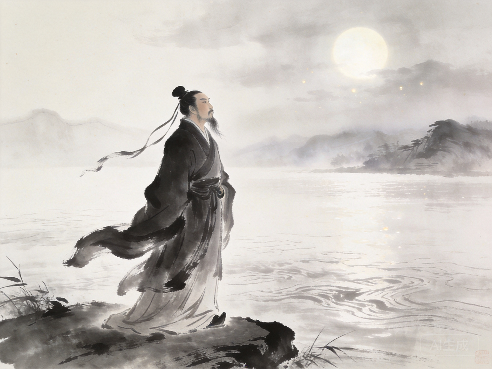
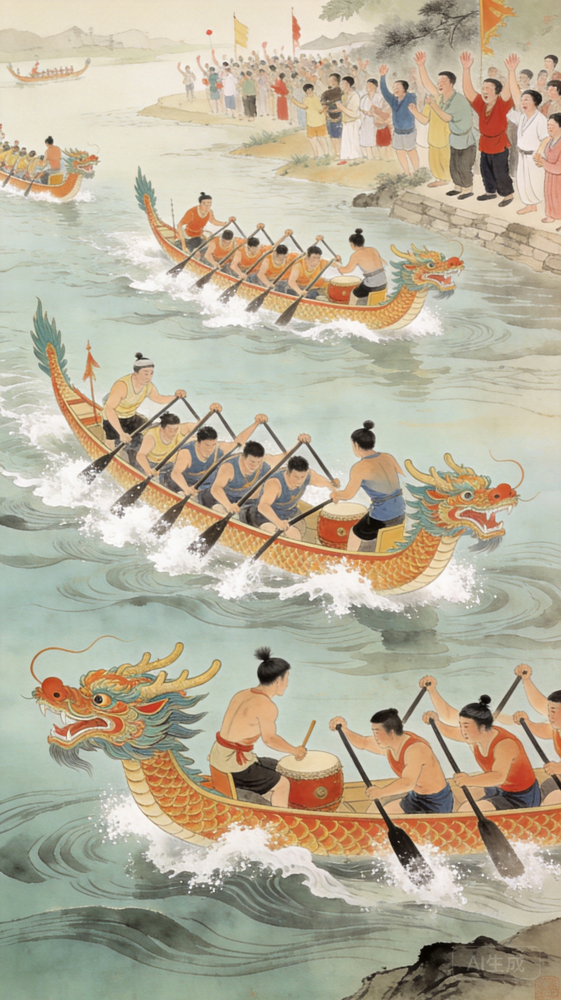
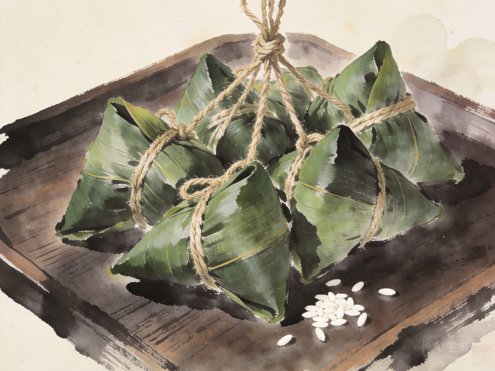
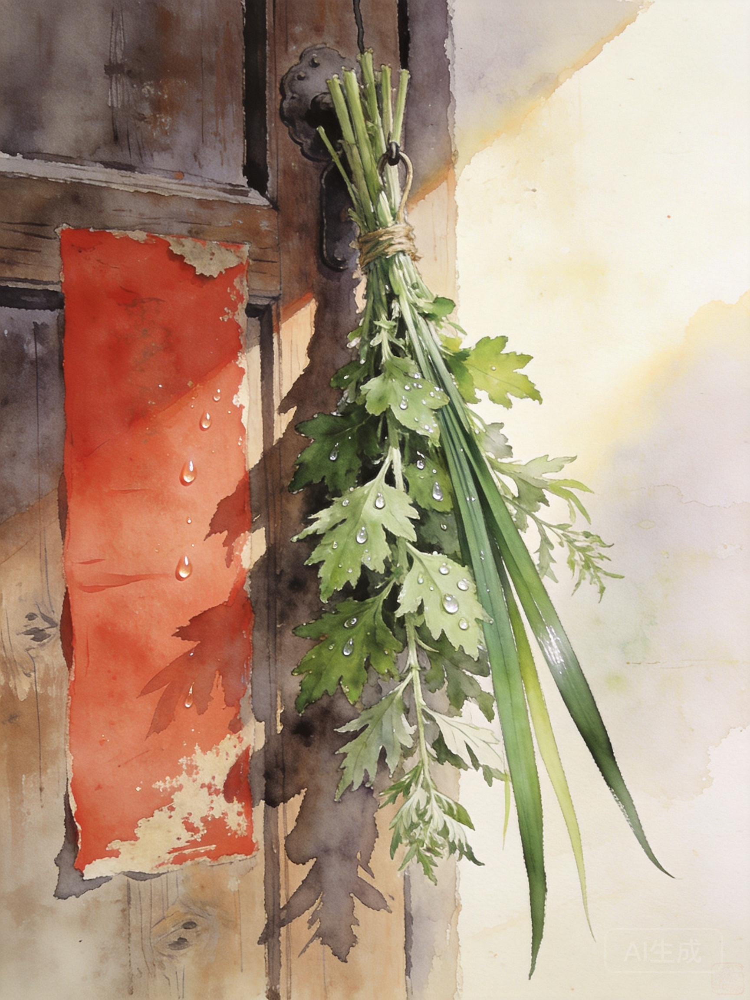

Dragon Boat Festival
魂兮归来 · 与天地兮同寿
农历五月初五
▼ 汨罗江上

公元前 278 年，秦将白起攻破郢都。楚国大夫屈原在汨罗江畔行吟，写下绝笔《怀沙》后投江殉国。那一天是农历五月初五。
两千三百年过去，楚国的宫阙早已化为尘土，但「长太息以掩涕兮，哀民生之多艰」的悲悯，「路漫漫其修远兮，吾将上下而求索」的执着，仍在这片土地上回响。
"举世皆浊我独清，众人皆醉我独醒。"
CHU CI · SONGS OF THE SOUTH
——《离骚》（节选）
另有《九歌》祭神之曲、《天问》叩问宇宙、《九章》哀郢怀沙

楚人划船投粽入江，驱散鱼虾以护屈原遗体。后演变为龙舟竞渡，成为端午最具仪式感的集体活动。
赛前请德高望重者为龙舟点睛——朱砂点龙睛，唤醒神龙。一点天庭，二点眼睛，三点口利。
船头鼓手以鼓点统一桨频，急如骤雨。鼓声不止，龙舟不歇。一鼓作气，再而衰，三而竭。

以箬竹叶包裹，清香渗入糯米。南方的阔叶箬竹，北方的芦苇叶，各有其味。
鲜肉、蛋黄、香菇、板栗。入口咸香，油脂浸润糯米，一颗足以饱腹。浙沪闽粤各有流派。
豆沙、红枣、蜜枣、莲子。北方偏好甜口，蘸白糖而食。软糯清甜，冷热皆宜。
系五色丝线于粽上，青赤黄白黑，象征五行护佑。食粽后系于孩童腕间，避邪纳吉。
端午清晨，家家户户在门楣悬挂艾草与菖蒲。艾叶清香驱虫，菖蒲形如利剑斩邪。这一习俗可追溯至先秦——五月为"恶月"，五日为"恶日"，瘟毒滋生，古人以草木为盾。
艾草晒干后制成艾绒，用于艾灸，千年不辍。菖蒲根茎入药，芳香开窍，亦为文人雅士案头清供。

端午饮雄黄酒以避毒虫。以雄黄粉末泡入白酒，大人饮之，孩童则以指蘸酒在额上写一"王"字，借虎威驱邪。
《白蛇传》中白娘子端午饮雄黄酒现原形，最为脍炙人口。孩童胸前佩戴五彩香囊，内装朱砂、雄黄、香药。以五色丝线弦扣成索，结成一串，玲珑夺目，既是护身符，也是端午最温柔的手作。
一针一线，缝入的是母亲对孩子的祝福。青 · 赤 · 黄 · 白 · 黑 · 端午系于腕间的五行守护
五色对应五行——青为木主东方，赤为火主南方，黄为土居中央，白为金主西方，黑为水主北方。五色线缠绕成索，系于孩童手腕，端午后第一个雨天解下抛入河中，让河水带走灾厄。